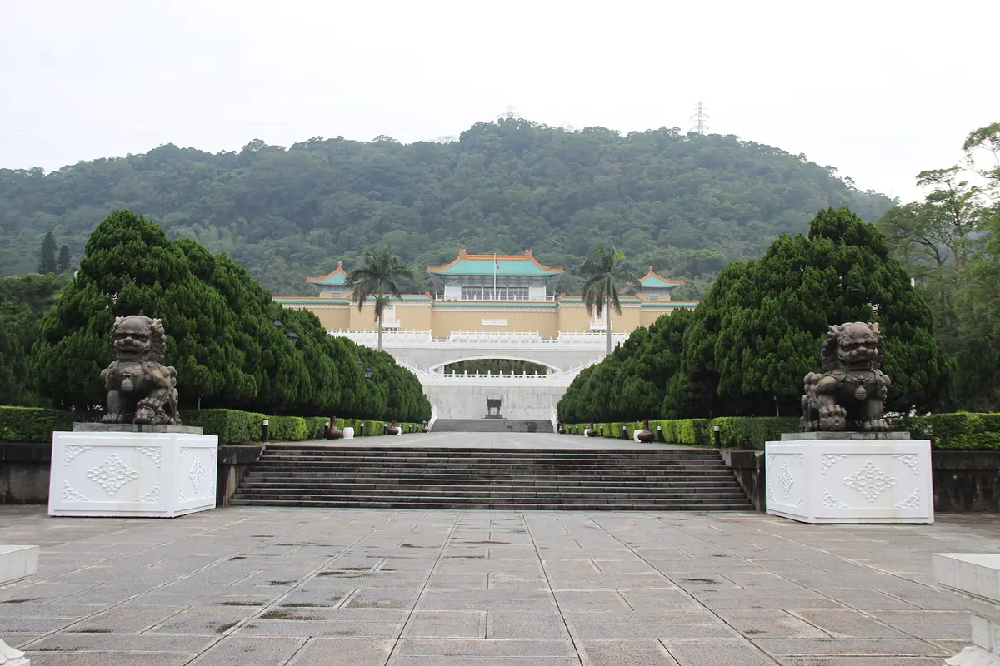

국립고궁박물원 입장권과 근처 맛집, 관람 뒤엔 어디서 먹을까?
황실 유물을 둘러본 다음, 박물관 안 식당이나 스린 쪽 맛집까지 한 번에 정해보세요.
게시 · 수정
비 오는 날 타이베이에서 반나절을 보내기 좋은 곳을 꼽으면 국립고궁박물원(國立故宮博物院)이 먼저 나와요. 다만 시내 중심에서 떨어진 外雙溪에 있어서, 박물관 안에서 먹을지 스린 쪽으로 나와서 먹을지 미리 정해두면 편해요. 故宮 공식 사이트와 交通部觀光署 자료를 바탕으로 2026년 10월 기준으로 정리했어요.
01 · 국립고궁박물원은 어떤 곳일까
옛 황궁(故宮)에 전해지던 황실 소장품을 모은 박물관이에요. 1965년 外雙溪에 중국 궁전 양식으로 지어졌고, 송·원·명·청 네 왕조의 소장품을 이어받아 약 70만 점의 유물을 갖고 있어요.

02 · 꼭 볼 소장품
翠玉白菜 배추 모양 옥 조각으로 가장 인기 있는 소장품이에요.
肉形石 돼지고기 조각처럼 보이는 돌이에요.
毛公鼎 긴 명문이 새겨진 청동기예요.
至善園·至德園 박물관 옆 송나라풍 정원과 연못 정원도 함께 둘러보기 좋아요.
03 · 가는 법
MRT 士林역에서 버스 MRT 士林역에서 버스를 타고 故宮博物院 정류장에서 내려요.
관람 팁 전시가 방대해서 반나절은 잡는 게 좋아요. 더 자세한 동선은 고궁박물원 관람 팁 글에 정리해뒀어요.
04 · 운영 시간과 요금 (2026년 10월 기준)
| 내용 | |
|---|---|
| 관람 시간 | 화~일 09:00~17:00(제1전시관), 월요일 휴관 |
| 일반 입장권 | NT$350 |
| 무료 | 18세 미만 등(공식 사이트의 무료 대상 확인) |
05 · 관람 뒤 들르기 좋은 근처 맛집
박물관 4층 식당 삼희당이 지도에 등록돼 있어 관람 중간에 쉬어 가기 좋아요. 나머지는 2.4~2.8km 떨어진 스린·다즈 쪽이라 버스나 택시로 이동하는 편이 편해요. 아래 거리는 지도에 등록된 좌표로 잰 직선거리라 실제 이동 거리는 더 길 수 있어요.
삼희당 (고궁박물원 4층 식당) · 카페 · 북쪽 약 0.1km 지도 메모: 고궁박물원 4층 식당에서 ‘분위기를 타는 사람이라 여기 꽤 좋았어요’라고 평가했다.
Chiou Hwa · 딤섬 · 남동쪽 약 2.4km 지도에 딤섬(으)로 등록된 곳이에요.
三明堂 · 베이커리 · 북서쪽 약 2.5km 지도에 베이커리(으)로 등록된 곳이에요.
Bao Bao Bao · 딤섬 · 서쪽 약 2.5km 지도 메모: 스린역 근처. 양이 푸짐하고 새우볶음밥·크림새우가 특히 좋아 재방문하고 싶다.
Butler Coffee House · 카페 · 남쪽 약 2.6km 지도 메모: 시장 구석이지만 브라질 블렌딩 아이스아메리카노가 크리미해서 극찬할 만하다.
D23 Coffee Dazhi · 카페 · 남쪽 약 2.6km 지도에 카페(으)로 등록된 곳이에요.
Niu Mowang Steak House 牛魔王牛排館 · 스테이크 · 남서쪽 약 2.8km 지도 메모: 스린 야시장의 스테이크집으로, 추천 메뉴인 안심 스테이크가 맛있다.
가게마다 쉬는 날과 영업시간이 다르니 방문 전 구글맵에 등록된 영업시간을 확인하세요.
지도에서 타이베이 맛집도 확인해보세요
박물관 일정 앞뒤로 들를 타이베이 맛집을 지도에서 함께 찜해두세요.